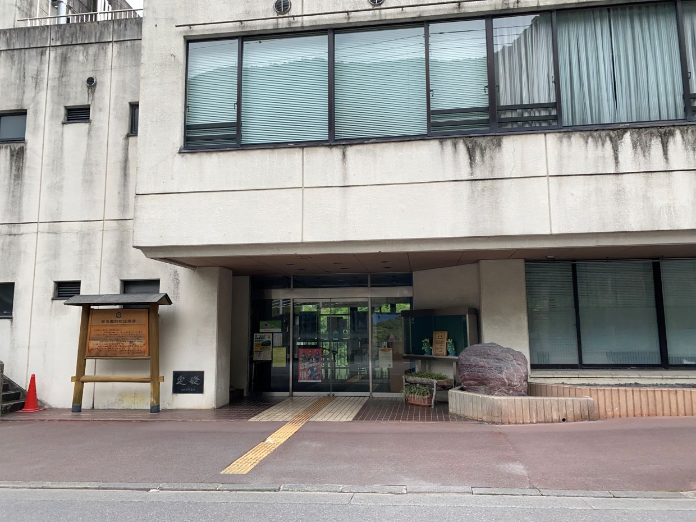

東京都 奥多摩町
役場

東京都最西端で、雲取山や奥多摩湖、日原鍾乳洞と東京らしくない自然の観光地が多いです。山梨県に接しています。奥多摩湖は多摩川水系のダムであり、東京都民の大半はここが命です。鍾乳洞はアクセスが大変ですがきれいにライトアップされており夏でも涼しく、良い観光地であると思います。

東京都最西端で、雲取山や奥多摩湖、日原鍾乳洞と東京らしくない自然の観光地が多いです。山梨県に接しています。奥多摩湖は多摩川水系のダムであり、東京都民の大半はここが命です。鍾乳洞はアクセスが大変ですがきれいにライトアップされており夏でも涼しく、良い観光地であると思います。